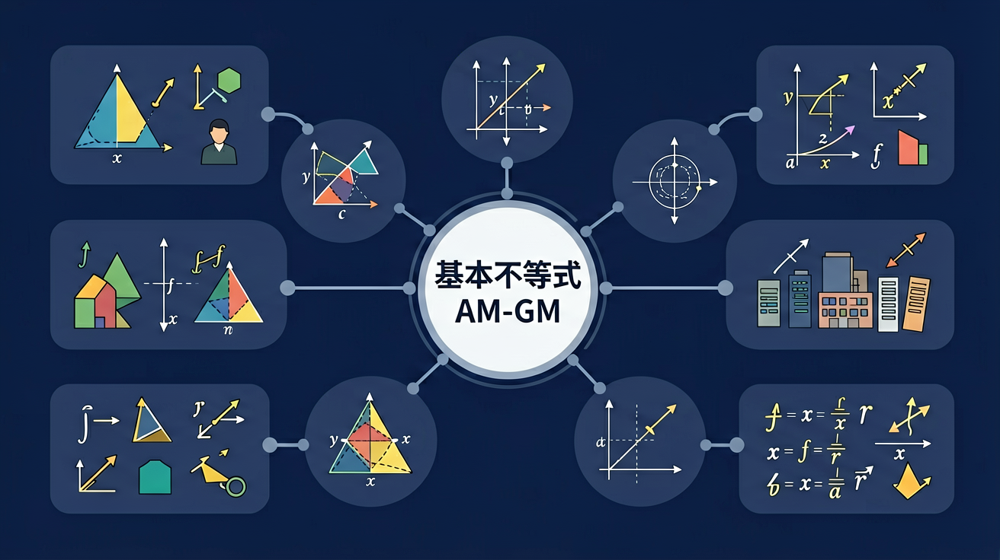

❓ 为什么a+b≥2√ab这个式子看起来这么奇怪？
❓ 这个不等式在生活里有什么用？买菜能用到吗？
❓ 为什么有时候用这个公式算出来的最小值不对？
学完这一课，这些问题你都能自信地回答。

能用自己的语言解释基本不等式（AM-GM）的核心概念和定义
能运用等号成立条件解决具体问题
能在新情境中灵活应用基本不等式（AM-GM）的知识
你正在学习基本不等式（AM-GM），需要掌握其核心概念和方法
💡 本课的前置知识：不等式的性质与解法
关于"基本不等式a+b≥2√ab"，下列说法正确的是？
And 你已经掌握了基本的数学概念
But 仅凭已有知识，无法深入理解基本不等式a+b≥2√ab的内涵与应用
Therefore 所以学习基本不等式a+b≥2√ab——掌握其定义、方法和应用
基本不等式a+b≥2√ab是基本不等式（AM-GM）中的重要内容。
详见课本相关章节的详细定义和推导过程。
注意审题，仔细计算，检查每一步
关于"基本不等式a+b≥2√ab"，下列说法正确的是？
And 你已经掌握了基本不等式a+b≥2√ab
But 仅凭已有知识，无法深入理解等号成立条件的内涵与应用
Therefore 所以学习等号成立条件——掌握其定义、方法和应用
等号成立条件是基本不等式（AM-GM）中的重要内容。
详见课本相关章节的详细定义和推导过程。
注意审题，仔细计算，检查每一步
关于"等号成立条件"，下列说法正确的是？
And 你已经掌握了等号成立条件
But 仅凭已有知识，无法深入理解基本不等式的证明的内涵与应用
Therefore 所以学习基本不等式的证明——掌握其定义、方法和应用
基本不等式的证明是基本不等式（AM-GM）中的重要内容。
详见课本相关章节的详细定义和推导过程。
注意审题，仔细计算，检查每一步
关于"基本不等式的证明"，下列说法正确的是？
And 你已经掌握了基本不等式的证明
But 仅凭已有知识，无法深入理解利用均值求最值的内涵与应用
Therefore 所以学习利用均值求最值——掌握其定义、方法和应用
利用均值求最值是基本不等式（AM-GM）中的重要内容。
详见课本相关章节的详细定义和推导过程。
注意审题，仔细计算，检查每一步
关于"利用均值求最值"，下列说法正确的是？
回顾本课核心概念，用自己的话总结基本不等式（AM-GM）的定义和关键性质。
选择一个真实场景，运用基本不等式（AM-GM）的知识建立模型并分析。
设计一道关于基本不等式（AM-GM）的原创综合题，要求融合至少两个关键概念，并给出详细解答。
关于"利用均值求最值"，下列说法正确的是？
用基本不等式（AM-GM）的知识解决一个实际问题，写出完整的解题过程。
基本不等式a+b≥2√ab的常见错误：注意审题，仔细计算，检查每一步
等号成立条件的常见错误：注意审题，仔细计算，检查每一步
基本不等式的证明的常见错误：注意审题，仔细计算，检查每一步
利用均值求最值的常见错误：注意审题，仔细计算，检查每一步
先独立作答，再点选项查看对错与错因。
用40米围栏围矩形花园，当长宽分别为多少时面积最大？
下列哪组正数满足2x+y=20且xy最大？
已知a>0,b>0,a+b=10，则ab的最大值是
当x>0时，x+16/x的最小值为____
答案：8
根据AM-GM不等式得x=4时取最小值
设a,b为正数且a+b=12，则ab的最大值为____
答案：36
当a=b=6时乘积最大
关于AM-GM不等式，正确的是
研究固定表面积的长方体盒子如何设计体积最大
左边是算术平均数，右边是几何平均数
两个正数的和永远大于等于它们乘积平方根的2倍
与一次不等式不同，这里涉及二次项和开方运算
想象两个面积相同的长方形，正方形周长最短
可推广到多个正数的情况（如a+b+c≥3³√abc）
✅ 使用前必须确认a,b>0
💡 负数开方无意义
✅ 求最值后必须检查a=b是否成立
💡 机械套用公式
✅ 需先配凑成标准形式
💡 不理解公式结构
口诀：正数相加折半大，乘积开方两倍压
类比：就像调果汁，纯果汁（几何平均）太浓，加水稀释（算术平均）才能喝